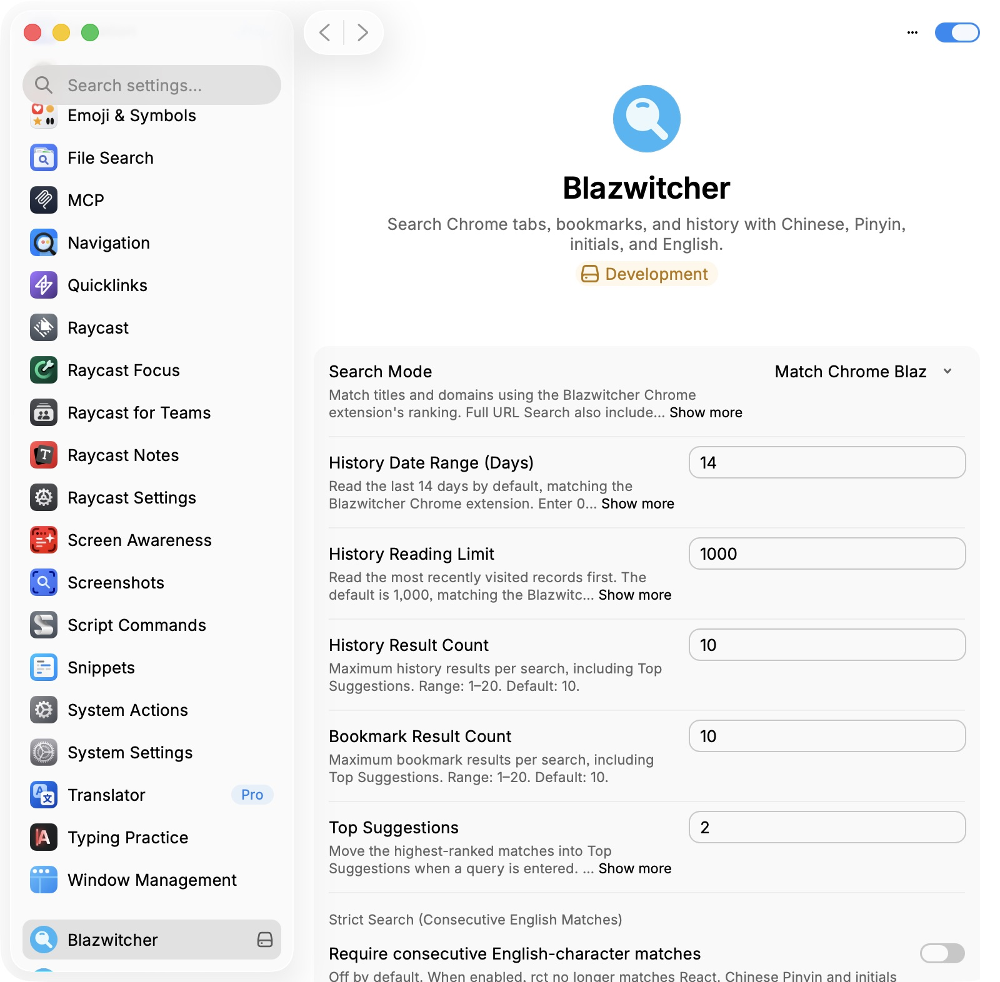

拼音与首字母
sxw → sxwlx；shangxiawen → shangxiawen tq。相近中文标题由 3 条收窄到 1 条。
2026-10-16 · master 232b014 · raycast-blaz · 11 个公开页面、5 个 Chrome 分组
5 组实录：只裁剪真实窗口和静止等待，不改写界面。录制与验证记录
sxw → sxwlx；shangxiawen → shangxiawen tq。相近中文标题由 3 条收窄到 1 条。
skills github.com → skills github.com openai。由 3 条收窄到 2 条，openai/skills 排在首位。
kuaisu → kuaisu rm → kuaisu rm claude.com → rm claude.com kuaisu。
/b zhishi zl → /h openviking.ai zhibiao。分别找到公开演示书签和历史记录。
展开命中高亮、Tab 来源标签和真实正文，切换结果，再收起。需要官方 Raycast Browser Extension。
当前设置截图；本轮没有修改设置。
